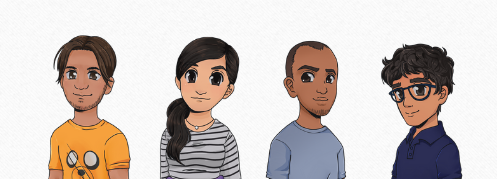

Créditos
Reconocimiento a todas las personas e instituciones que hicieron posible este proyecto.
Colaboradores:
Ana Paulina López Cazares
Hector Cardona Reyes
Miguel Ortiz Esparza
Agradecemos a todos los colaboradores por hacer posible esta experiencia mágica de cuentos con realidad aumentada.
